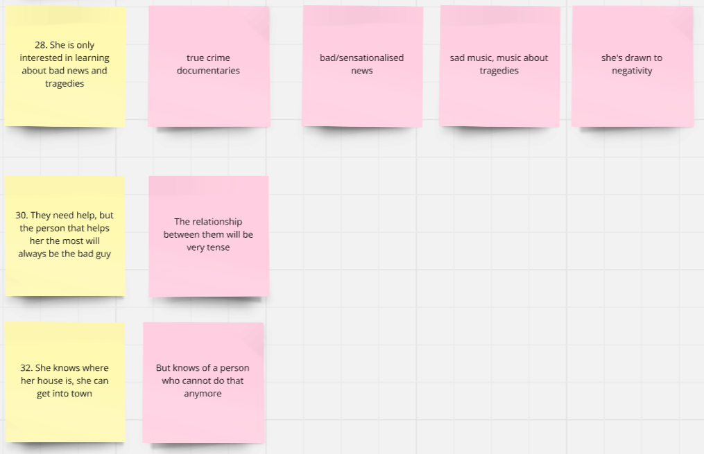
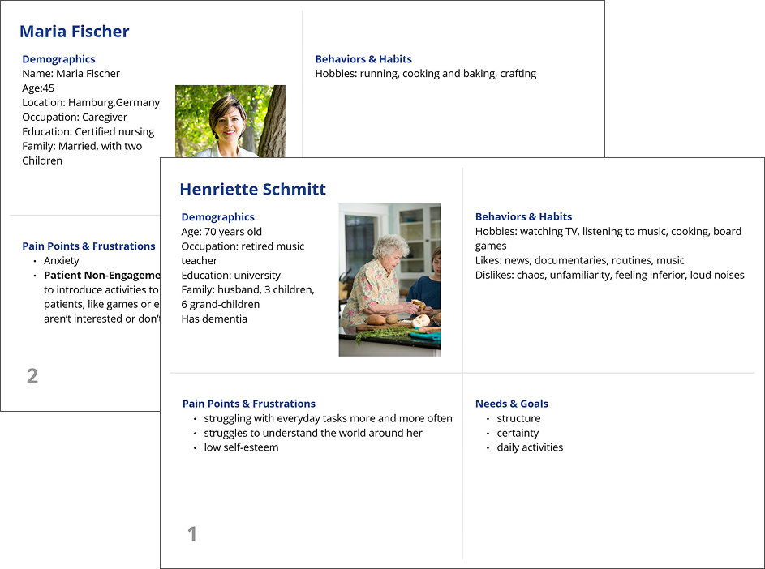
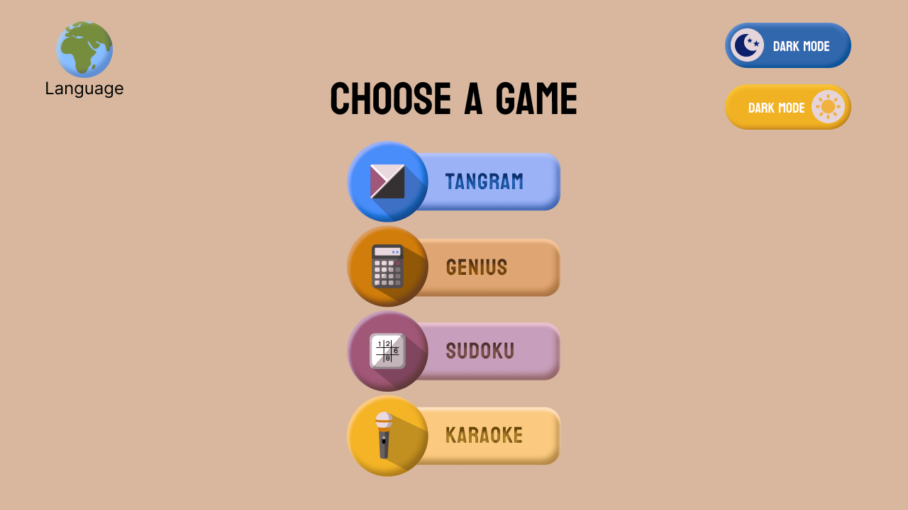
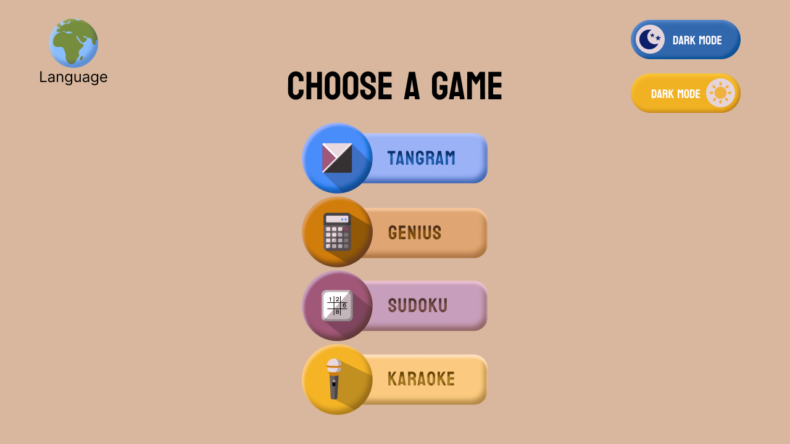
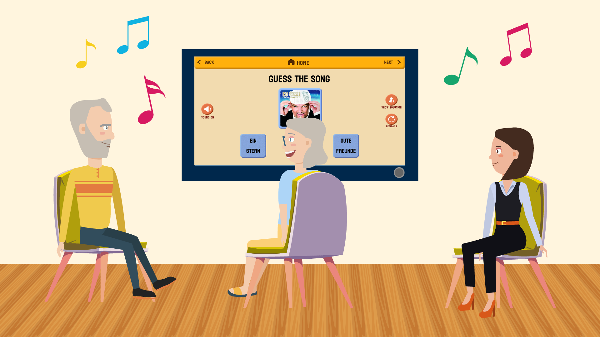

App Design
Playful Dementia Care
Supporting people with dementia: Providing relief in care homes. Collaborative work.

Research
Our goal with this collaborative project was to support people with dementia and their family, friends and caregivers. Of course, we first had to do some research on the illness and the biggest challenges that come with it. We looked for information online in forums and different foundations. The Alzheimer Gesellschaft Ingolstadt helped us find people to interview about the illness. We also talked to a family member who takes care of her mother. Our interviewees asked us not to take pictures or publish any personal information.
Concept
We came up with different concepts, but ultimately decided on a concept that would help modern care homes provide care for their residents and relief for their caregivers. Our app will work on big touchscreen TVs in common areas of care facilities and will offer single and multiplayer games. It can be used standing up or sitting down and will have some exergaming elements.
Personas
Our personas reflect the aforementioned target groups: residents of care homes and their caregivers. Creating these personas helped us keep in mind their particular needs.
Paper Prototypes & Usability Tests
Our paper prototypes were made on a tablet, but we printed them out and had a chance to show them to our interview partners. They gave us feedback on the games and game play. For example, we realised that we didn’t need buttons for rotation as pieces can be rotated on the touchscreen using two hands. This also adds an aspect of exergaming because these small movements can also be helpful.

User Journey
After the final interviews and usability tests, we finalised our user journeys in Miro. The example shows the user journey for Math Genius.

Wireframes
Our wireframes were based on our paper prototypes and the feedback we got. The wireframes were made in Figma and we ended up with 51 screens.


Style & Moodboard
The wireframes were made in Figma and we ended up with 51 screens. The style we decided on is light, colourful and warm through the use of natural texture (wood, fabric). To make it more haptic, we would incorporate skeumorphism into the buttons.


Style Guide
We used colourblind-friendly colours and based them on the IBM Design Library. Any other colour was selected to fit in and have enough contrast to work for as many as possible. The colour scheme was double-checked with the online tools Adobe Color and Coblis.

Final Screens
We made our final screens in a shared Figma file. To ensure consistency, we made use of Figma’s features and set up variables and components. The comparison below shows the original menu screen vs. the screen with a colourblind-filter from Coblis.
 



Video
We used assets from Freepik (see video credits) for our characters and backgrounds, frankensteining them together in a way that fit our ideas and story. My partner Roxana animated the final characters in Adobe Animate, while I composed some more assets and did some basic animations in Adobe After Effects. Using After Effects and Premiere Pro, I edited the video and added music by Roa (roa-music.com) and the voice-over generated with Eleven Labs.
Click the image below to watch the video. Please note that you are redirected to YouTube.
Final Thoughts
This was the biggest design project I’ve tackled so far. We only had a few months to complete the project from start to finish, which meant a lot of work and quick decisions. I am very proud of the result, and I have genuinely learned a lot. The project was completed in collaboration with Roxana Anchescu.